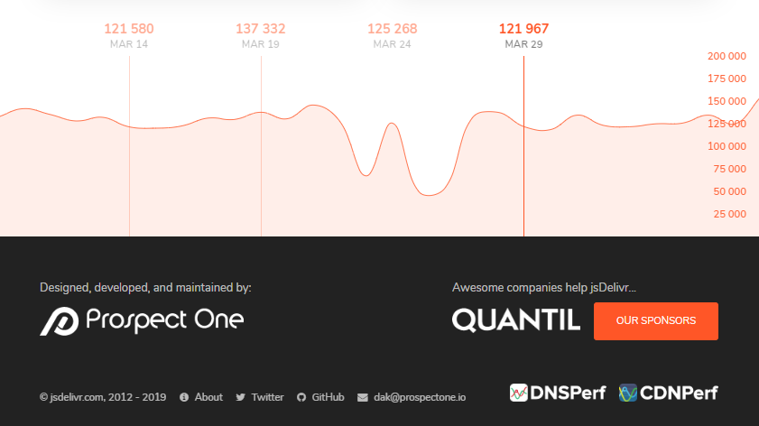

Recreating a quiet chart designed to blend into its surrounding web page.
data-visualization
highcharter
Author
Joshua Kunst
Published
April 8, 2019
Modified
August 13, 2026
I was searching for a CDN at jsdelivr.com and I noticed a chart showing download per days:

Why I like this chart? Because is a chart integrated with the web site using all space and soft colors to not call the attention. A very special chart.
Now we’ll try to replicate :). That’s why we’re are here. Let’s download the data:
Remove the lables and reduce number of axis ticks.
A lot of tweaks!
And the most important step in this chart: use all the space, reducing the margins and move the x-axis labels to the inner side. Using the l-screen option in distill package.
color_theme<-"#E76235"# extracted with chrome extensionhchart(datag, "areaspline", hcaes(date, downloads), name ="Downloads")%>%hc_xAxis( title =list(text =NULL), opposite =TRUE, gridLineWidth =1, gridLineColor =color_theme, # vertical lines tickColor =color_theme, lineColor ="transparent", # horizontal line, labels =list(style =list(color =color_theme, fontSize ="16px")), tickInterval =8*24*3600*1000# interval of 1 day (in your case = 60))%>%hc_yAxis( title =list(text =""), opposite =TRUE, gridLineColor ="transparent", showFirstLabel =FALSE, labels =list( style =list(color =color_theme, fontSize ="16px"), align ="left", x =-100))%>%hc_plotOptions( series =list( color =color_theme, fillColor =hex_to_rgba(color_theme, 0.20), marker =list(enabled =FALSE)))%>%hc_chart( spacingBottom =0, spacingLeft =-6, spacingRight =-55# just plying to get these numbers)%>%hc_size(height =300)